|
Bin Chen (陈斌) I am currently an Assistant Professor with the Department of Computer Science and Technology, Harbin Institute of Technology, Shenzhen (HITSZ). I got my Ph.D. from the Department of Computer Science and Technology, Tsinghua University, under the supervision of Prof. Shu-Tao Xia . I have also been fortunate to visit Prof. En-Hui Yang at the University of Waterloo (UW) from Dec 2019 to May 2020. My research interests include Coding Theory and Information Theory, Machine Learning and Deep Learning. Research Fields
We are always actively recruiting highly motivated students and research interns. For Prospective applicants, please send an email to me: chenbin2021@hit.edu.cn |


-
News -
2023-07: Two papers got accepted by ICCV 2023. Congrats to Hao Fang and Yaohua Zha!
-
-
Selective Publications [ ALL ](* Equal Contribution and # Corresponding Author)
Journal Papers 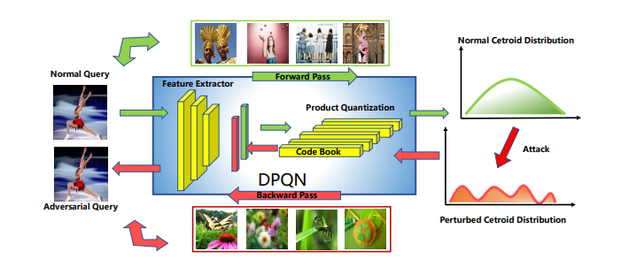 Adversarial Attack on Deep Product Quantization Network for Image Retrieval
Bin Chen, Yan Feng, Tao Dai, Shu-Tao Xia
IEEE Transactions on Pattern Analysis and Machine Intelligence (TPAMI), 2022
[arxiv] [code]
We propose product quantization adversarial generation (PQAG), a simple yet effective method to generate adversarial examples for product quantization based retrieval systems.
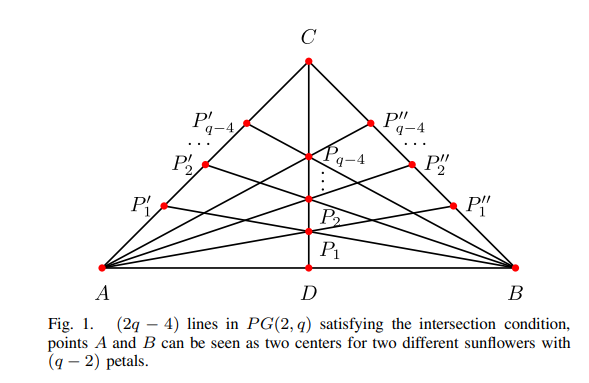 Improved Bounds and Singleton-Optimal Constructions of Locally Repairable Codes With Minimum Distance 5 and 6
Bin Chen, Weijun Fang, Shu-Tao Xia, Jie Hao, Fang-Wei Fu
IEEE Transactions on Information Theory (TIT), 2021
[TIT]
We obtain a complete characterization for Singlet-optimal LRCs with r = 2 and d = 6.
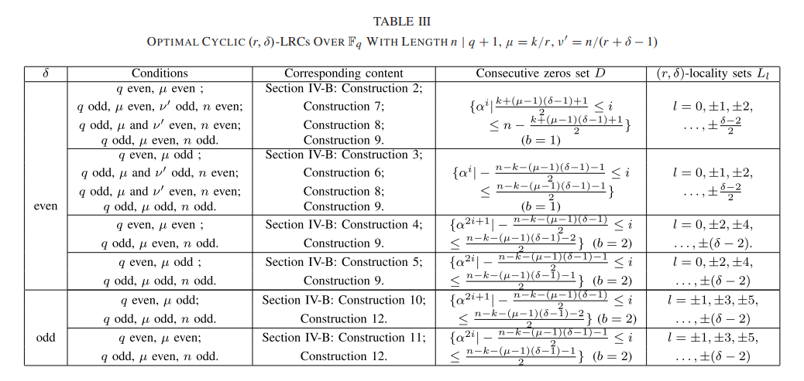 Constructions of Optimal Cyclic (r, δ) Locally Repairable Codes
Bin Chen, Shu-Tao Xia, Jie Hao, Fang-Wei Fu
IEEE Transactions on Information Theory (TIT), 2018
[TIT]
We construct a new class of optimal q-ary cyclic r-local LRCs with lengths n | q + 1 and a new class of optimal q-ary cyclic (r, δ)-LRCs (δ ≥ 2) with lengths n | q + 1.
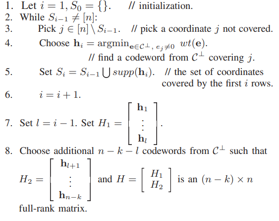 Bounds and Constructions of Locally Repairable Codes: Parity-Check Matrix Approach
Jie Hao, Shu-Tao Xia, Kenneth Shum, Bin Chen, Fang-Wei Fu, Yi-Xian Yang
IEEE Transactions on Information Theory (TIT), 2020
[TIT]
We give an alternate proof of the Singleton-like bound for LRCs first proved by Gopalan et al. Some structural properties on optimal LRCs that achieve the Singleton-like bound are given.
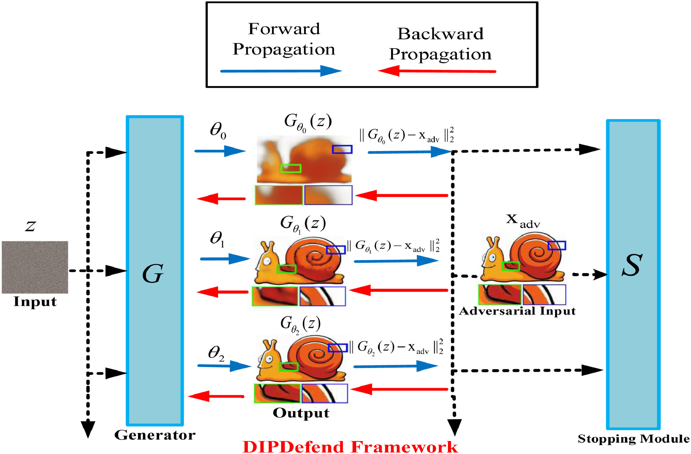 Deep image prior based defense against adversarial examples
Tao Dai, Yan Feng, Bin Chen#, Jian Lu, Shu-Tao Xia
Pattern Recognition (PR), 2022
[PR]
We develop an adaptive stopping strategy that adapts our method to diverse images.

Practical protection against video data leakage via universal adversarial head
Jiawang Bai, Bin Chen#, Kuofeng Gao, Xuan Wang, Shu-Tao Xia
Pattern Recognition (PR), 2022
[PR]
We propose universal adversarial head (UAH), which crafts adversarial query videos by prepending the original videos with a sequence of adversarial frames to perturb the normal hash codes in the Hamming space.
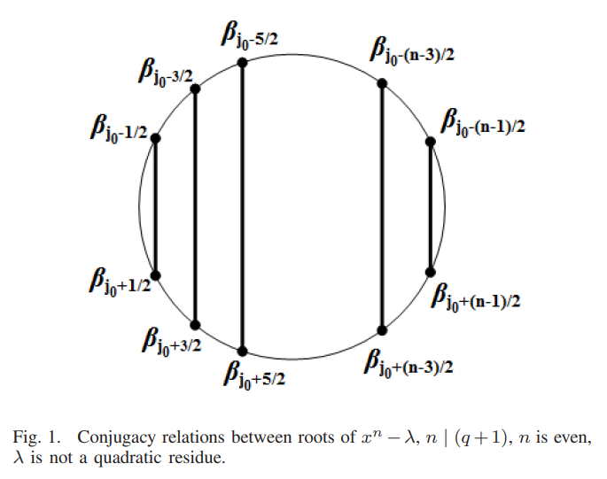 Constructions of Optimal (r, δ) Locally Repairable Codes via Constacyclic Codes
Jiawang Bai, Bin Chen#, Kuofeng Gao, Xuan Wang, Shu-Tao Xia
IEEE Transactions on Communication (TCOM), 2019
[TCOM]
we have completely obtained all optimal (r, δ)-LRCs with length n | (q + 1) and (r + δ − 1) | n for all possible parameters for the completeness in the coding theory.
Conference Papers 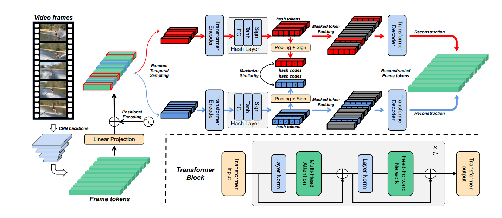 Contrastive Masked Autoencoders for Self-Supervised Video Hashing
Yuting Wang, Jinpeng Wang, Bin Chen#, Ziyun Zeng, Shu-Tao Xia
Thirty-Seventh AAAI Conference on Artificial Intelligence (AAAI), 2023
[arxiv] [code]
We propose a simple yet effective onestage SSVH method called ConMH, which incorporates video semantic information and video similarity relationship understanding in a single stage.
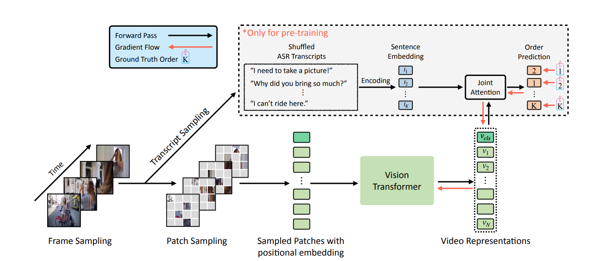 Learning Transferable Spatiotemporal Representations from Natural Script Knowledge
Ziyun Zeng, Yuying Ge, Xihui Liu, Bin Chen#, Ping Luo, Shu-Tao Xia, Yixiao Ge#
IEEE Conference on Computer Vision and Pattern Recognition (CVPR), 2023
[CVPR] [code]
We introduce a new pretext task, Turning to Video for Transcript Sorting (TVTS), which sorts shuffled ASR scripts by attending to learned video representations.
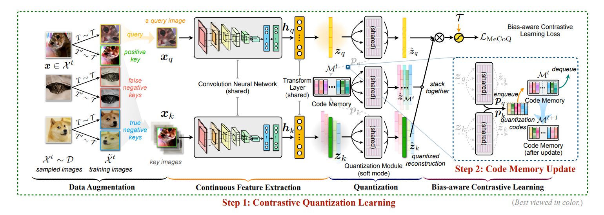 Contrastive Quantization with Code Memory for Unsupervised Image Retrieval
Jinpeng Wang, Ziyun Zeng, Bin Chen#, Tao Dai, Shu-Tao Xia
Thirty-Sixth AAAI Conference on Artificial Intelligence (AAAI), 2022
[arxiv] [code]
We learn unsupervised binary descriptors by contrastive learning, which can better capture discriminative visual semantics.
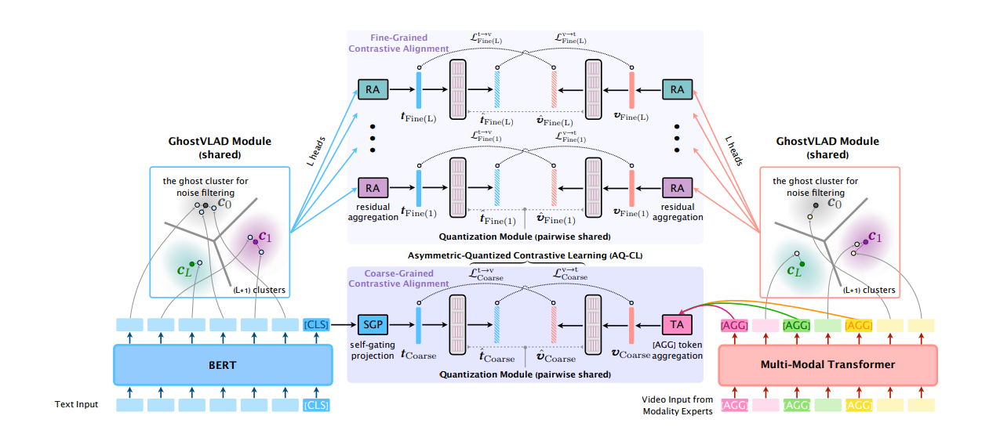 Hybrid Contrastive Quantization for Efficient Cross-View Video Retrieval
Jinpeng Wang, Bin Chen#, Dongliang Liao#, Ziyun Zeng, Gongfu Li, Shu-Tao Xia, Jin Xu
ACM Web Conference (WWW), 2022
[arxiv] [code]
We propose the first quantized representation learning method for cross-view video retrieval, namely Hybrid Contrastive Quantization (HCQ).
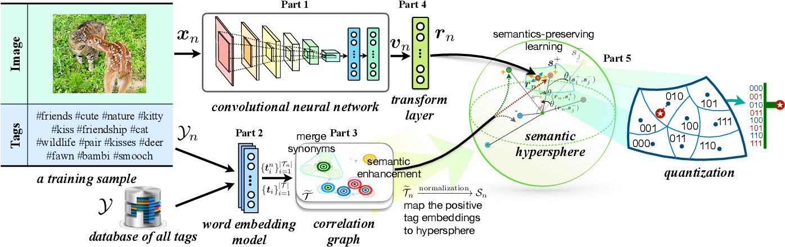 Weakly Supervised Deep Hyperspherical Quantization for Image Retrieval
Jinpeng Wang*, Bin Chen* #
Thirty-Fifth AAAI Conference on Artificial Intelligence (AAAI), 2021
[AAAI] [code]
We propose Weakly-Supervised Deep Hyperspherical Quantization (WSDHQ), which is the first work to learn deep quantization from weakly tagged images.
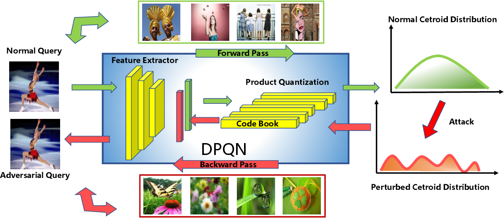 Adversarial Attack on Deep Product Quantization Network for Image Retrieval
Yan Feng*, Bin Chen*, Tao Dai, Shu-Tao Xia
Thirty-Fourth AAAI Conference on Artificial Intelligence (AAAI), 2020
[AAAI]
We propose product quantization adversarial generation (PQ-AG), a simple yet effective method to generate adversarial examples for product quantization based retrieval systems.
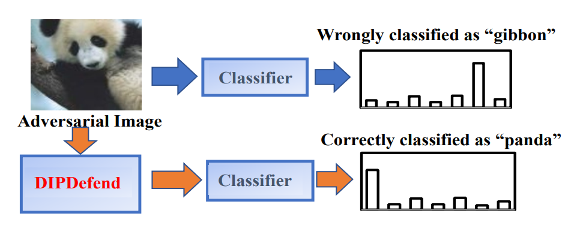 DIPDefend: Deep Image Prior Driven Defense against Adversarial Examples
Tao Dai*, Yan Feng*, Dongxian Wu, Bin Chen#
28th ACM International Conference on Multimedia (MM), 2020
[ACM] [code]
We propose an effective Deep Image Prior Driven Defense (DIPDefend) method against adversarial examples.
-
Research Groups [5 PhD students, 10+ master students, 10+ undergraduate students from HITSZ/Tsinghua SIGS/Nankai University]
-
Data Compression and Channel Coding Group
-
AI Security Group -
Data Retrieval Group
-
-
Teaching -
Set Theory and Graph Theory, Fall 2022/2023 -
Formal Language and Automata, Spring 2022/2023
-
-
Academic Services Journal Reviewer - IEEE Transactions on Information Theory
- IEEE Transactions on Communications
- IEEE communication letter
- IEEE Access
- IEICE Transactions on Fundamentals of Electronics, Communications, and Computer Sciences
- IEICE Transactions on Information and Systems
- Science China on Information Science
Conference Reviewer / Program Committee Member - Neural Information Processing Systems (NeurIPS-20)
- 2017 IEEE International Symposium on Information Theory (ISIT-17/23)
- IEEE Data Compression Conference (DCC-20/21)
- AAAI Conference on Artificial Intelligence (AAAI-21/22/23)
- International Joint Conference on Artificial Intelligence (IJCAI-21/22/23)
- IEEE/CVF Conference on Computer Vision and Pattern Recognition (CVPR-21/23)
- IEEE/CVF International Conference on Computer Vision (ICCV-23)
AMS Mathematical Reviewer